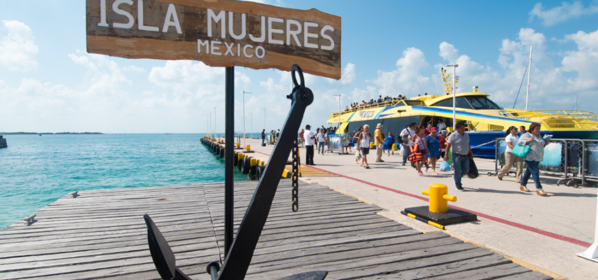

¿Por qué elegir viajar con Impulso Nómada?
Desde que abrimos la web, nuestra
misión siempre ha sido ofrecer experiencias inolvidables a
nuestros viajeros y podemos decir con total seguridad que ¡lo
hemos conseguido! Quien nos contacta busca un servicio de calidad
y la garantía que, siendo nosotros especialistas en nuestros
destinos, sabemos aconsejar de la mejor forma al viajero para
proporcionarle el servicio más adaptado a sus exigencias.
¿Tienen oficinas?
Somos una agencia de viajes en linea. Nuestro sistema de trabajo está pensado para que cómodamente desde casa, cada viajero que nos contacta pueda recibir una información detallada, fácil de consultar y clara del paquete que hemos preparado. Además estamos en continua evolución para proporcionar un servicio siempre más eficiente en cuanto a rapidez de respuesta, claridad, exhaustividad y herramientas tecnológicas. Sin duda, proporcionalmente a lo pequeños que somos como Tour Operador, nuestra plataforma informática es muy avanzada.
¿Como se reserva y cuales son las condiciones de pago?
Una vez solicitado el viaje a través del formulario de contacto, nosotros verificaremos la disponibilidad de lo/s alojamientos/s y te enviaremos, en el plazo máximo de 48 horas, una propuesta hecha a medida para tus exigencias. Si decides ir adelante con las reservas, entonces enviaremos un correo electrónico con el enlace al área de cliente personal donde tendrás que complementar el formulario de datos y aceptar formalmente las condiciones de contrato. Una vez recibamos el todo procederemos con las pre-reservas y entonces, si los alojamientos están todos disponibles, enviaremos la factura y/o recibo y el número de cuenta de nuestra agencia de viajes donde efectuar el ingreso del 30% en concepto de reserva. El 70% se paga 45 días antes de la salida (lógicamente si ya estamos dentro este plazo la factura a abonar será directamente del 100%) y entonces enviaremos todos los documentos y vouchers del viaje que deberás imprimir y llevar contigo. Solo en el caso que haya algún alojamiento que ya está lleno, antes de abonar el 30% o 100%, avisaremos y te propondremos una alternativa en la misma zona y si aceptas entonces procedemos con el proceso estándar de reserva explicado arriba.
¿Cual es su política de cancelación?
Nuestra política de cancelación se basa en con cuánta antelación recibimos el aviso por parte de los clientes: un 5% si se produce con más de 10 días antes de la salida, un 15% entre 10 y 3 días antes y un 25% en las 48hs anteriores. Si el cliente no se presenta a la salida, los gastos de anulación serían del 100%. A esto se le tiene que añadir posibles condiciones de cancelación de cada alojamiento más unos gastos administrativos que retenemos. Al margen de estas condiciones oficiales, muchos de nuestros paquetes tienen un seguro de cancelación, y si no lo tienen y tienes que anular igualmente, antes de proceder a aplicar las penalizaciones intentamos estudiar una buena solución para todos, como por ejemplo, si existe la posibilidad, de posponer el viaje a otras fechas.
Contáctanos
Si no encuentras la respuestas a tus dudas aquí puedes usar nuestros contactos de atención al cliente y encantados te atenderemos. Escribenos a nuestro correo electronico: info@impulsonomada.com

¿Tienen oficinas?
Somos una agencia de viajes en linea. Nuestro sistema de trabajo está pensado para que cómodamente desde casa, cada viajero que nos contacta pueda recibir una información detallada, fácil de consultar y clara del paquete que hemos preparado. Además estamos en continua evolución para proporcionar un servicio siempre más eficiente en cuanto a rapidez de respuesta, claridad, exhaustividad y herramientas tecnológicas. Sin duda, proporcionalmente a lo pequeños que somos como Tour Operador, nuestra plataforma informática es muy avanzada.
¿Como se reserva y cuales son las condiciones de pago?
Una vez solicitado el viaje a través del formulario de contacto, nosotros verificaremos la disponibilidad de lo/s alojamientos/s y te enviaremos, en el plazo máximo de 48 horas, una propuesta hecha a medida para tus exigencias. Si decides ir adelante con las reservas, entonces enviaremos un correo electrónico con el enlace al área de cliente personal donde tendrás que complementar el formulario de datos y aceptar formalmente las condiciones de contrato. Una vez recibamos el todo procederemos con las pre-reservas y entonces, si los alojamientos están todos disponibles, enviaremos la factura y/o recibo y el número de cuenta de nuestra agencia de viajes donde efectuar el ingreso del 30% en concepto de reserva. El 70% se paga 45 días antes de la salida (lógicamente si ya estamos dentro este plazo la factura a abonar será directamente del 100%) y entonces enviaremos todos los documentos y vouchers del viaje que deberás imprimir y llevar contigo. Solo en el caso que haya algún alojamiento que ya está lleno, antes de abonar el 30% o 100%, avisaremos y te propondremos una alternativa en la misma zona y si aceptas entonces procedemos con el proceso estándar de reserva explicado arriba.
¿Cual es su política de cancelación?
Nuestra política de cancelación se basa en con cuánta antelación recibimos el aviso por parte de los clientes: un 5% si se produce con más de 10 días antes de la salida, un 15% entre 10 y 3 días antes y un 25% en las 48hs anteriores. Si el cliente no se presenta a la salida, los gastos de anulación serían del 100%. A esto se le tiene que añadir posibles condiciones de cancelación de cada alojamiento más unos gastos administrativos que retenemos. Al margen de estas condiciones oficiales, muchos de nuestros paquetes tienen un seguro de cancelación, y si no lo tienen y tienes que anular igualmente, antes de proceder a aplicar las penalizaciones intentamos estudiar una buena solución para todos, como por ejemplo, si existe la posibilidad, de posponer el viaje a otras fechas.
Contáctanos
Si no encuentras la respuestas a tus dudas aquí puedes usar nuestros contactos de atención al cliente y encantados te atenderemos. Escribenos a nuestro correo electronico: info@impulsonomada.com